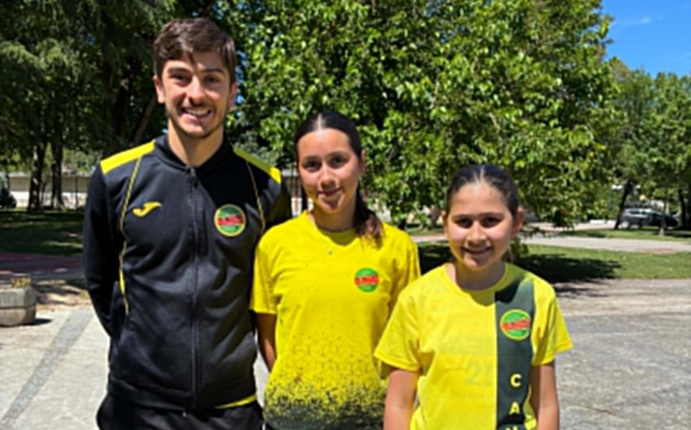

Com recorde pessoal nos 10km, Matilde Angélico, sagrou-se Vice-Campeã Nacional de Sub-20 ao percorrer a distância em
50.22 minutos.
No Grande Prémio Internacional na distância de 21km, Tiago Sucena, foi o 6º da geral e o 3º português a concluir a
prova em 1:37.08 horas (RP).
Na prova jovem, Madalena Angélico, percorreu a distância de 2km em 13.09min (RP) ocupando a 18ª posição da geral e o
3º lugar em Benj. B.
Parabéns a todos!
Matilde Angélico Vice-Campeã Nacional
Decorreu este sábado o 33.º Grande Prémio Internacional de Rio Maior que também acolheu os Campeonatos Nacionais de Marcha em Estrada para os escalões Sub-18 e Sub-20. Matilde Angélico foi vice-campeã nacional na prova de 5000m.
